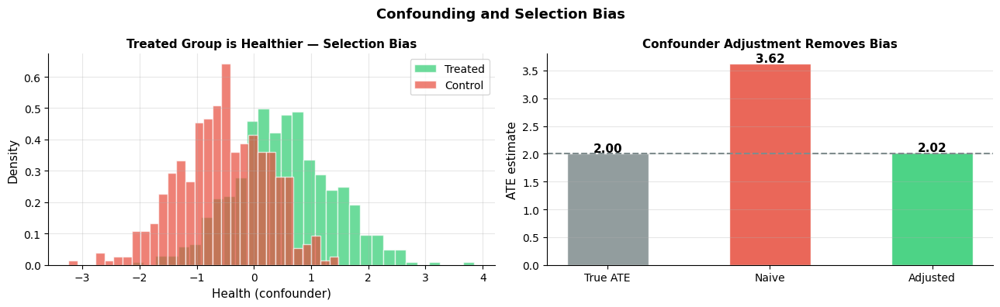
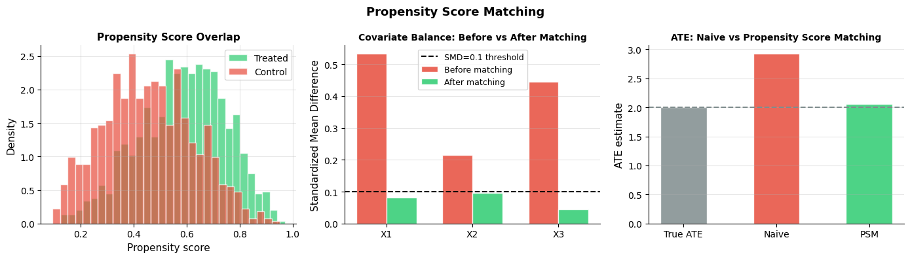
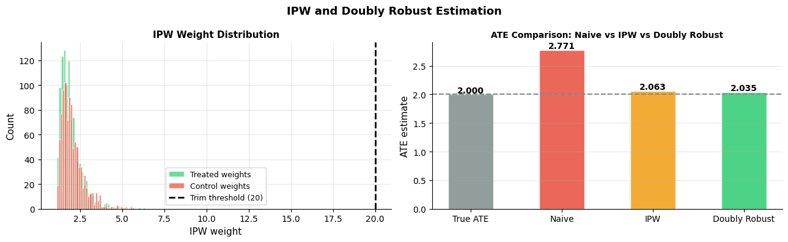
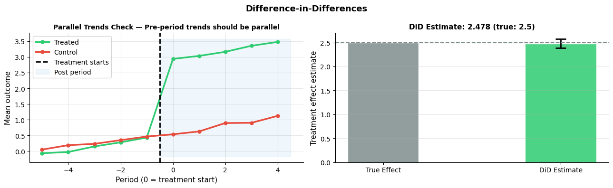
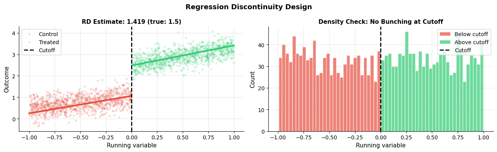

How do you estimate causal effects from observational data?#
Topics: Confounders · Propensity Score Matching · IPW · Doubly Robust Estimation · Difference-in-Differences · Regression Discontinuity
1. Confounders & Selection Bias#
What it is#
Confounder: variable that causes both treatment and outcome — creates spurious association
Selection bias: treated and control groups differ systematically before treatment
Without randomization, naive comparison of treated vs control mixes treatment effect with confounder effect
Key intuition#
Sicker patients get more treatment → comparing outcomes ignores baseline health
Wealthier people exercise more AND live longer → exercise appears more effective than it is
Goal: find treated and control units that are comparable on all confounders
Assumption: Ignorability (Unconfoundedness)#
(Y(0), Y(1)) ⊥ T | X— given observed covariates X, treatment assignment is as good as randomAlso called: no unmeasured confounders, selection on observables, conditional independence
Validation#
No direct test — requires domain knowledge and subject matter expertise
Sensitivity analysis — how much unmeasured confounding would change the conclusion?
Placebo test — apply method to an outcome the treatment cannot affect
If violated#
Instrumental variables (File 4) — find a variable that affects treatment but not outcome directly
Difference-in-differences — use time variation to control for fixed confounders
Sensitivity analysis — bound the estimate under various confounding scenarios
import numpy as np
import matplotlib.pyplot as plt
from scipy import stats
np.random.seed(42)
n = 1000
# Data generating process with confounder
health = np.random.randn(n) # confounder: baseline health
treatment = (health + np.random.randn(n) > 0).astype(int) # healthier people more likely treated
outcome = 2.0 * treatment + 1.5 * health + np.random.randn(n) # true ATE = 2.0
# Naive estimate (ignores confounder)
naive_ate = outcome[treatment==1].mean() - outcome[treatment==0].mean()
# Adjusted estimate (controls for confounder)
from numpy.linalg import lstsq
X_adj = np.column_stack([treatment, health, np.ones(n)])
coefs, _, _, _ = lstsq(X_adj, outcome, rcond=None)
adjusted_ate = coefs[0]
print(f"True ATE : 2.000")
print(f"Naive ATE : {naive_ate:.3f} (biased upward — healthier people get treated)")
print(f"Adjusted ATE : {adjusted_ate:.3f} (much closer to truth)")
fig, axes = plt.subplots(1, 2, figsize=(13, 4))
# Show confounder distribution
axes[0].hist(health[treatment==1], bins=30, alpha=0.7, color='#2ECC71',
label='Treated', edgecolor='white', density=True)
axes[0].hist(health[treatment==0], bins=30, alpha=0.7, color='#E74C3C',
label='Control', edgecolor='white', density=True)
axes[0].set_xlabel('Health (confounder)', fontsize=11)
axes[0].set_ylabel('Density', fontsize=11)
axes[0].set_title('Treated Group is Healthier — Selection Bias', fontsize=11, fontweight='bold')
axes[0].legend(fontsize=10); axes[0].grid(True, alpha=0.3)
axes[0].spines['top'].set_visible(False); axes[0].spines['right'].set_visible(False)
# Bias comparison
estimates = {'True ATE': 2.0, 'Naive': naive_ate, 'Adjusted': adjusted_ate}
colors = ['#7F8C8D', '#E74C3C', '#2ECC71']
bars = axes[1].bar(estimates.keys(), estimates.values(), color=colors, alpha=0.85, edgecolor='white', width=0.5)
axes[1].axhline(2.0, color='#7F8C8D', linewidth=1.5, linestyle='--')
axes[1].set_ylabel('ATE estimate', fontsize=11)
axes[1].set_title('Confounder Adjustment Removes Bias', fontsize=11, fontweight='bold')
axes[1].grid(True, alpha=0.3, axis='y')
axes[1].spines['top'].set_visible(False); axes[1].spines['right'].set_visible(False)
for bar, val in zip(bars, estimates.values()):
axes[1].text(bar.get_x()+bar.get_width()/2, bar.get_height()+0.03,
f'{val:.2f}', ha='center', fontsize=11, fontweight='bold')
plt.suptitle('Confounding and Selection Bias', fontsize=13, fontweight='bold')
plt.tight_layout()
plt.savefig('confounding.png', dpi=120, bbox_inches='tight')
plt.show()
True ATE : 2.000
Naive ATE : 3.620 (biased upward — healthier people get treated)
Adjusted ATE : 2.017 (much closer to truth)

2. Propensity Score Matching#
What it is#
Propensity score: P(T=1|X) — probability of treatment given covariates
Match each treated unit to a control unit with similar propensity score
Creates a pseudo-randomized dataset where groups are comparable
Assumptions#
Ignorability: no unmeasured confounders — Y(0),Y(1) ⊥ T | X
Positivity/Overlap: 0 < P(T=1|X) < 1 for all X — everyone must have a chance of being treated or not
SUTVA: no interference between units
Validation#
Overlap plot: propensity score distributions should overlap between groups
Balance check: after matching, covariate means should be similar
Standardized mean difference (SMD): should be < 0.1 after matching
If violated#
Ignorability violated → IV, DiD, sensitivity analysis
Positivity violated → trim units with extreme propensity scores (< 0.05 or > 0.95)
Poor overlap → restrict analysis to region of common support
import numpy as np
import matplotlib.pyplot as plt
from sklearn.linear_model import LogisticRegression
from sklearn.preprocessing import StandardScaler
np.random.seed(42)
n = 2000
X1 = np.random.randn(n)
X2 = np.random.randn(n)
X3 = np.random.randn(n)
logit = 0.5*X1 + 0.3*X2 - 0.4*X3
T = np.random.binomial(1, 1/(1+np.exp(-logit)), n)
Y = 2.0*T + 1.5*X1 + 0.8*X2 + np.random.randn(n)
X = np.column_stack([X1, X2, X3])
scaler = StandardScaler()
X_scaled = scaler.fit_transform(X)
lr = LogisticRegression()
lr.fit(X_scaled, T)
pscore = lr.predict_proba(X_scaled)[:, 1]
# Nearest-neighbor matching with replacement
def match_with_replacement(T, pscore, Y):
treated_idx = np.where(T==1)[0]
control_idx = np.where(T==0)[0]
matched_ctrl = []
for ti in treated_idx:
dists = np.abs(pscore[control_idx] - pscore[ti])
best = control_idx[np.argmin(dists)]
matched_ctrl.append(best)
matched_ctrl = np.array(matched_ctrl)
return treated_idx, matched_ctrl, Y[treated_idx].mean() - Y[matched_ctrl].mean()
treated_idx, matched_ctrl, matched_ate = match_with_replacement(T, pscore, Y)
naive_ate = Y[T==1].mean() - Y[T==0].mean()
print(f"True ATE : 2.000")
print(f"Naive ATE : {naive_ate:.3f}")
print(f"PSM ATE : {matched_ate:.3f}")
fig, axes = plt.subplots(1, 3, figsize=(14, 4))
# Propensity score overlap
axes[0].hist(pscore[T==1], bins=30, alpha=0.7, color='#2ECC71', label='Treated', edgecolor='white', density=True)
axes[0].hist(pscore[T==0], bins=30, alpha=0.7, color='#E74C3C', label='Control', edgecolor='white', density=True)
axes[0].set_xlabel('Propensity score', fontsize=11)
axes[0].set_ylabel('Density', fontsize=11)
axes[0].set_title('Propensity Score Overlap', fontsize=11, fontweight='bold')
axes[0].legend(fontsize=10); axes[0].grid(True, alpha=0.3)
axes[0].spines['top'].set_visible(False); axes[0].spines['right'].set_visible(False)
# Balance before/after matching
cov_names = ['X1', 'X2', 'X3']
smd_before, smd_after = [], []
for cov in [X1, X2, X3]:
sd_pool = np.sqrt((cov[T==1].var() + cov[T==0].var()) / 2)
smd_before.append(abs(cov[T==1].mean() - cov[T==0].mean()) / sd_pool)
cov_matched = np.concatenate([cov[treated_idx], cov[matched_ctrl]])
T_matched = np.concatenate([np.ones(len(treated_idx)), np.zeros(len(matched_ctrl))])
sd_pool_m = np.sqrt((cov_matched[T_matched==1].var() + cov_matched[T_matched==0].var()) / 2)
smd_after.append(abs(cov_matched[T_matched==1].mean() - cov_matched[T_matched==0].mean()) / sd_pool_m)
x = np.arange(len(cov_names))
w = 0.35
axes[1].bar(x-w/2, smd_before, w, color='#E74C3C', alpha=0.85, edgecolor='white', label='Before matching')
axes[1].bar(x+w/2, smd_after, w, color='#2ECC71', alpha=0.85, edgecolor='white', label='After matching')
axes[1].axhline(0.1, color='black', linewidth=1.5, linestyle='--', label='SMD=0.1 threshold')
axes[1].set_xticks(x); axes[1].set_xticklabels(cov_names)
axes[1].set_ylabel('Standardized Mean Difference', fontsize=11)
axes[1].set_title('Covariate Balance: Before vs After Matching', fontsize=10, fontweight='bold')
axes[1].legend(fontsize=9); axes[1].grid(True, alpha=0.3, axis='y')
axes[1].spines['top'].set_visible(False); axes[1].spines['right'].set_visible(False)
# ATE comparison
axes[2].bar(['True ATE', 'Naive', 'PSM'],
[2.0, naive_ate, matched_ate],
color=['#7F8C8D', '#E74C3C', '#2ECC71'], alpha=0.85, edgecolor='white', width=0.5)
axes[2].axhline(2.0, color='#7F8C8D', linewidth=1.5, linestyle='--')
axes[2].set_ylabel('ATE estimate', fontsize=11)
axes[2].set_title('ATE: Naive vs Propensity Score Matching', fontsize=10, fontweight='bold')
axes[2].grid(True, alpha=0.3, axis='y')
axes[2].spines['top'].set_visible(False); axes[2].spines['right'].set_visible(False)
plt.suptitle('Propensity Score Matching', fontsize=13, fontweight='bold')
plt.tight_layout()
plt.savefig('psm.png', dpi=120, bbox_inches='tight')
plt.show()
True ATE : 2.000
Naive ATE : 2.923
PSM ATE : 2.060

3. Inverse Probability Weighting (IPW) & Doubly Robust Estimation#
IPW#
Reweight observations by inverse of propensity score to create a pseudo-population
Treated units get weight
1/P(T=1|X), control units get weight1/P(T=0|X)Upweights underrepresented units → balanced comparison
Doubly Robust Estimation#
Combines propensity score model AND outcome model
Consistent if EITHER model is correctly specified — not both
More robust than PSM or IPW alone — preferred in practice
Assumptions#
Same as PSM: ignorability, positivity, SUTVA
IPW additionally: propensity score model is correctly specified
Doubly robust: at least one of (propensity model, outcome model) is correct
Validation#
Extreme weights (>20) indicate positivity issues — trim or use stabilized weights
Check outcome model fit (R², residual plots)
Overlap plots for propensity scores
If violated#
Extreme weights → trim at 99th percentile, use stabilized IPW
Poor overlap → restrict to common support region
Both models wrong → no fallback — use IV or DiD if possible
import numpy as np
import matplotlib.pyplot as plt
from sklearn.linear_model import LogisticRegression, LinearRegression
from sklearn.preprocessing import StandardScaler
np.random.seed(42)
n = 2000
X1 = np.random.randn(n); X2 = np.random.randn(n)
logit = 0.5*X1 + 0.3*X2
T = np.random.binomial(1, 1/(1+np.exp(-logit)), n)
Y = 2.0*T + 1.5*X1 + np.random.randn(n)
X = np.column_stack([X1, X2])
scaler = StandardScaler()
X_sc = scaler.fit_transform(X)
lr = LogisticRegression(); lr.fit(X_sc, T)
ps = lr.predict_proba(X_sc)[:, 1]
# IPW estimate
w_treated = T / ps
w_control = (1-T) / (1-ps)
ipw_ate = (w_treated * Y).sum() / w_treated.sum() - (w_control * Y).sum() / w_control.sum()
# Doubly robust (AIPW)
outcome_model = LinearRegression()
outcome_model.fit(np.column_stack([T, X_sc]), Y)
mu1 = outcome_model.predict(np.column_stack([np.ones(n), X_sc]))
mu0 = outcome_model.predict(np.column_stack([np.zeros(n), X_sc]))
dr_ate = (mu1 - mu0).mean() + ((T*(Y-mu1)/ps) - ((1-T)*(Y-mu0)/(1-ps))).mean()
naive_ate = Y[T==1].mean() - Y[T==0].mean()
print(f"True ATE : 2.000")
print(f"Naive ATE : {naive_ate:.3f}")
print(f"IPW ATE : {ipw_ate:.3f}")
print(f"Doubly Robust ATE : {dr_ate:.3f}")
fig, axes = plt.subplots(1, 2, figsize=(13, 4))
# Weight distribution
axes[0].hist(1/ps[T==1], bins=40, alpha=0.7, color='#2ECC71', edgecolor='white', label='Treated weights')
axes[0].hist(1/(1-ps[T==0]), bins=40, alpha=0.7, color='#E74C3C', edgecolor='white', label='Control weights')
axes[0].axvline(20, color='black', linewidth=2, linestyle='--', label='Trim threshold (20)')
axes[0].set_xlabel('IPW weight', fontsize=11); axes[0].set_ylabel('Count', fontsize=11)
axes[0].set_title('IPW Weight Distribution', fontsize=11, fontweight='bold')
axes[0].legend(fontsize=9); axes[0].grid(True, alpha=0.3)
axes[0].spines['top'].set_visible(False); axes[0].spines['right'].set_visible(False)
axes[1].bar(['True ATE', 'Naive', 'IPW', 'Doubly Robust'],
[2.0, naive_ate, ipw_ate, dr_ate],
color=['#7F8C8D','#E74C3C','#F39C12','#2ECC71'], alpha=0.85, edgecolor='white', width=0.5)
axes[1].axhline(2.0, color='#7F8C8D', linewidth=1.5, linestyle='--')
axes[1].set_ylabel('ATE estimate', fontsize=11)
axes[1].set_title('ATE Comparison: Naive vs IPW vs Doubly Robust', fontsize=10, fontweight='bold')
axes[1].grid(True, alpha=0.3, axis='y')
axes[1].spines['top'].set_visible(False); axes[1].spines['right'].set_visible(False)
for i, val in enumerate([2.0, naive_ate, ipw_ate, dr_ate]):
axes[1].text(i, val+0.03, f'{val:.3f}', ha='center', fontsize=10, fontweight='bold')
plt.suptitle('IPW and Doubly Robust Estimation', fontsize=13, fontweight='bold')
plt.tight_layout()
plt.savefig('ipw_dr.png', dpi=120, bbox_inches='tight')
plt.show()
True ATE : 2.000
Naive ATE : 2.771
IPW ATE : 2.063
Doubly Robust ATE : 2.035

4. Difference-in-Differences (DiD)#
What it is#
Compares the change over time between a treated group and a control group
Controls for time-invariant confounders (fixed effects)
DiD = (Post_treated - Pre_treated) - (Post_control - Pre_control)
Key intuition#
Both groups are trending — subtract the control group trend to isolate the treatment effect
Works even with confounders, as long as they don’t change differently over time
Assumptions#
Parallel trends: in absence of treatment, both groups would have followed the same trend
No anticipation: units don’t change behavior before treatment is applied
SUTVA: no spillover between treated and control groups
Validation#
Pre-trend plot: plot outcomes for both groups before treatment — should be parallel
Placebo test: apply DiD to a period before treatment — effect should be zero
Event study: plot DiD estimates for each pre/post period
If violated#
Parallel trends violated → synthetic control, difference-in-difference-in-differences (triple diff)
Anticipation effects → move treatment date back in the model
Spillover → use geographic DiD with buffer zones
import numpy as np
import matplotlib.pyplot as plt
import statsmodels.formula.api as smf
import pandas as pd
np.random.seed(42)
n_units = 200
n_pre, n_post = 5, 5
units = np.repeat(np.arange(n_units), n_pre + n_post)
periods = np.tile(np.arange(-(n_pre), n_post), n_units)
treated = np.repeat((np.arange(n_units) < n_units//2).astype(int), n_pre + n_post)
post = (periods >= 0).astype(int)
unit_fe = np.repeat(np.random.randn(n_units), n_pre + n_post)
time_fe = np.tile(np.linspace(0, 1, n_pre + n_post), n_units)
true_effect = 2.5
outcome = (unit_fe + time_fe + true_effect * treated * post + np.random.randn(len(units)) * 0.5)
df = pd.DataFrame({'unit': units, 'period': periods, 'treated': treated,
'post': post, 'Y': outcome})
# Parallel trends check
mean_by_group = df.groupby(['period', 'treated'])['Y'].mean().reset_index()
fig, axes = plt.subplots(1, 2, figsize=(13, 4))
for t_val, color, label in [(1, '#2ECC71', 'Treated'), (0, '#E74C3C', 'Control')]:
grp = mean_by_group[mean_by_group['treated'] == t_val]
axes[0].plot(grp['period'], grp['Y'], color=color, linewidth=2.5, marker='o', markersize=5, label=label)
axes[0].axvline(-0.5, color='black', linewidth=2, linestyle='--', label='Treatment starts')
axes[0].fill_betweenx([mean_by_group['Y'].min()-0.1, mean_by_group['Y'].max()+0.1],
-0.5, n_post-0.5, alpha=0.08, color='#3498DB', label='Post period')
axes[0].set_xlabel('Period (0 = treatment start)', fontsize=11)
axes[0].set_ylabel('Mean outcome', fontsize=11)
axes[0].set_title('Parallel Trends Check — Pre-period trends should be parallel', fontsize=10, fontweight='bold')
axes[0].legend(fontsize=10); axes[0].grid(True, alpha=0.3)
axes[0].spines['top'].set_visible(False); axes[0].spines['right'].set_visible(False)
# DiD regression
df['did'] = df['treated'] * df['post']
model = smf.ols('Y ~ treated + post + did + C(unit)', data=df).fit()
did_estimate = model.params['did']
did_ci = model.conf_int().loc['did']
axes[1].bar(['True Effect', 'DiD Estimate'], [true_effect, did_estimate],
color=['#7F8C8D', '#2ECC71'], alpha=0.85, edgecolor='white', width=0.4)
axes[1].errorbar([1], [did_estimate], yerr=[[did_estimate-did_ci[0]], [did_ci[1]-did_estimate]],
fmt='none', color='black', capsize=8, capthick=2, linewidth=2)
axes[1].axhline(true_effect, color='#7F8C8D', linewidth=1.5, linestyle='--')
axes[1].set_ylabel('Treatment effect estimate', fontsize=11)
axes[1].set_title(f'DiD Estimate: {did_estimate:.3f} (true: {true_effect})', fontsize=11, fontweight='bold')
axes[1].grid(True, alpha=0.3, axis='y')
axes[1].spines['top'].set_visible(False); axes[1].spines['right'].set_visible(False)
plt.suptitle('Difference-in-Differences', fontsize=13, fontweight='bold')
plt.tight_layout()
plt.savefig('did.png', dpi=120, bbox_inches='tight')
plt.show()
print(f"DiD estimate: {did_estimate:.3f}, 95% CI: [{did_ci[0]:.3f}, {did_ci[1]:.3f}]")

DiD estimate: 2.478, 95% CI: [2.385, 2.571]
5. Regression Discontinuity (RD)#
What it is#
Exploits a cutoff rule that determines treatment assignment
Units just above and below the cutoff are similar — only treatment differs
Compares outcomes for units just above vs just below the cutoff
Classic example#
Scholarship awarded to students with GPA >= 3.0
Compare students just above and just below 3.0 — essentially randomized near cutoff
Assumptions#
Continuity: potential outcomes are smooth functions of the running variable at the cutoff
No manipulation: units cannot precisely control their value of the running variable
No other discontinuities: nothing else changes at the cutoff
Validation#
Density test (McCrary test): check for bunching/gaps in running variable at cutoff
Covariate continuity: covariates should not jump at cutoff
Placebo cutoffs: apply RD at fake cutoffs — should find no effect
If violated#
Manipulation → fuzzy RD (instrument with cutoff), collect more granular data
Other discontinuities → difference-in-discontinuities design
Interview Q&A#
Sharp vs Fuzzy RD?
Sharp RD: crossing cutoff deterministically assigns treatment
Fuzzy RD: crossing cutoff changes probability of treatment — use IV approach
What is the bandwidth choice problem in RD?
Too narrow: few observations, high variance
Too wide: units far from cutoff are less comparable, higher bias
Use data-driven bandwidth selection (Imbens-Kalyanaraman or Calonico-Cattaneo-Titiunik)
Gotchas#
RD estimates a local average treatment effect (LATE) — only at the cutoff
Cannot generalize to units far from the cutoff
Requires many observations near the cutoff — thin data at cutoff = noisy estimates
import numpy as np
import matplotlib.pyplot as plt
np.random.seed(42)
n = 2000
cutoff = 0.0
running_var = np.random.uniform(-1, 1, n)
treatment = (running_var >= cutoff).astype(int)
true_effect = 1.5
outcome = (1.0 + 0.5*running_var + true_effect*treatment
+ 0.3*running_var*treatment + np.random.randn(n)*0.3)
# Local linear regression on each side
def local_linear(x, y, cutoff, bw=0.3):
mask_l = (x >= cutoff-bw) & (x < cutoff)
mask_r = (x >= cutoff) & (x <= cutoff+bw)
def fit(xm, ym):
X = np.column_stack([np.ones(xm.sum()), x[xm]])
coef = np.linalg.lstsq(X, y[xm], rcond=None)[0]
return coef
coef_l = fit(mask_l, outcome)
coef_r = fit(mask_r, outcome)
pred_l = coef_l[0] + coef_l[1]*cutoff
pred_r = coef_r[0] + coef_r[1]*cutoff
return pred_r - pred_l, coef_l, coef_r
rd_est, coef_l, coef_r = local_linear(running_var, outcome, cutoff, bw=0.3)
fig, axes = plt.subplots(1, 2, figsize=(13, 4))
# Scatter with fit
x_plot = np.linspace(-1, 1, 300)
mask_pos = x_plot >= cutoff; mask_neg = x_plot < cutoff
axes[0].scatter(running_var[treatment==0], outcome[treatment==0],
alpha=0.15, s=10, color='#E74C3C', label='Control')
axes[0].scatter(running_var[treatment==1], outcome[treatment==1],
alpha=0.15, s=10, color='#2ECC71', label='Treated')
axes[0].plot(x_plot[mask_neg], coef_l[0]+coef_l[1]*x_plot[mask_neg],
color='#E74C3C', linewidth=3)
axes[0].plot(x_plot[mask_pos], coef_r[0]+coef_r[1]*x_plot[mask_pos],
color='#2ECC71', linewidth=3)
axes[0].axvline(cutoff, color='black', linewidth=2, linestyle='--', label='Cutoff')
axes[0].set_xlabel('Running variable', fontsize=11); axes[0].set_ylabel('Outcome', fontsize=11)
axes[0].set_title(f'RD Estimate: {rd_est:.3f} (true: {true_effect})', fontsize=11, fontweight='bold')
axes[0].legend(fontsize=10); axes[0].grid(True, alpha=0.3)
axes[0].spines['top'].set_visible(False); axes[0].spines['right'].set_visible(False)
# Density check (McCrary test approximation)
axes[1].hist(running_var[running_var < cutoff], bins=30, alpha=0.7, color='#E74C3C',
edgecolor='white', label='Below cutoff')
axes[1].hist(running_var[running_var >= cutoff], bins=30, alpha=0.7, color='#2ECC71',
edgecolor='white', label='Above cutoff')
axes[1].axvline(cutoff, color='black', linewidth=2, linestyle='--', label='Cutoff')
axes[1].set_xlabel('Running variable', fontsize=11); axes[1].set_ylabel('Count', fontsize=11)
axes[1].set_title('Density Check: No Bunching at Cutoff', fontsize=11, fontweight='bold')
axes[1].legend(fontsize=10); axes[1].grid(True, alpha=0.3)
axes[1].spines['top'].set_visible(False); axes[1].spines['right'].set_visible(False)
plt.suptitle('Regression Discontinuity Design', fontsize=13, fontweight='bold')
plt.tight_layout()
plt.savefig('rdd.png', dpi=120, bbox_inches='tight')
plt.show()
print(f"RD estimate: {rd_est:.3f}, True effect: {true_effect}")

RD estimate: 1.419, True effect: 1.5